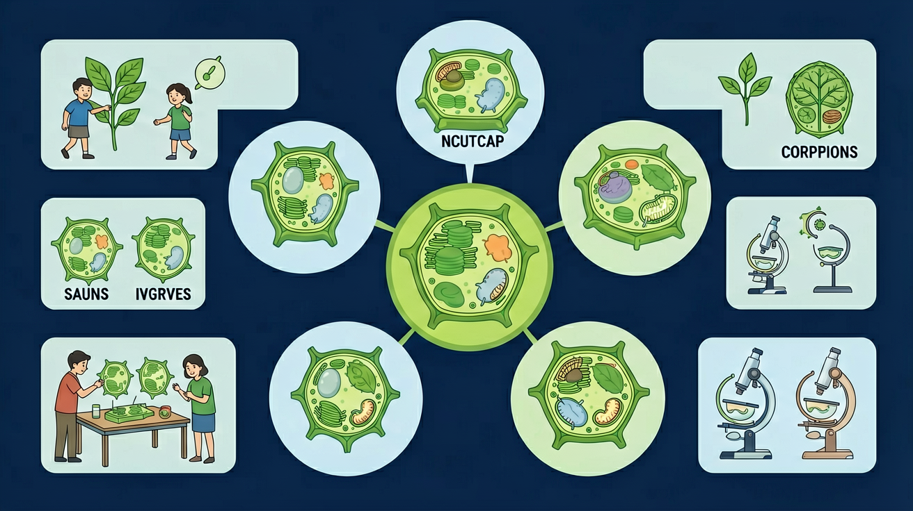

用显微镜看到的细胞里有什么？比较动植物细胞，发现生命的基本单位

🎯 能说出动植物细胞的基本结构名称
🎯 能判断细胞器功能对应的实际作用
🎯 能分析细胞结构与功能的适应性
❓ 为啥植物细胞有墙而动物细胞没有？
❓ 线粒体是细胞的发动机吗？
❓ 细胞核为啥像控制中心？
学完这一课，这些问题你都能自信地回答。
控制细胞生命活动的结构是？
植物细胞特有的结构是？
膜质核粒四兄弟，都是动物细胞必备！壁·绿·液 — 植物三宝！动物圆润无棱角，植物方正三宝齐
将左侧各项拖到右侧"动物细胞特有"或"植物细胞特有"或"共同拥有"对应的列中
用3D模型拆分细胞器观察内部结构
线粒体供能如同发电厂，叶绿体是食物加工厂
植物细胞特有细胞壁/叶绿体/大液泡
通过虚拟实验观察洋葱表皮细胞壁
解释根毛细胞大液泡对吸水的意义
下列哪项最能区分动植物细胞？
用碘液染色观察两种细胞
先独立作答，再点选项查看对错与错因。
下列哪项是植物细胞特有而动物细胞没有的结构？
生态池中某个细胞同时具有细胞壁和叶绿体，它可能是：
关于动植物细胞共有的结构，说法正确的是：
动植物细胞都有的能量转换器是____
答案：线粒体
线粒体通过呼吸作用释放能量
植物细胞中呈绿色的____能进行光合作用
答案：叶绿体
叶绿体含叶绿素捕获光能
✅ 细胞壁在最外层起支撑作用
💡 教材图示比例失真
✅ 仅绿色部位有叶绿体
💡 生活经验干扰
口诀：植物细胞三件宝，壁绿泡；动物细胞核质膜，线粒体里能量跑
类比：细胞就像城市，细胞核是市政府，线粒体是发电站
动植共有：膜·质·核·粒体植物三宝：壁·绿·大液泡动物没有：壁·绿·液（三样缺）
了解了细胞结构后，下一节探讨细胞如何进行生命活动——物质是如何跨越细胞膜进出细胞的？能量从哪里来？
【中考题】口腔上皮细胞临时装片滴加？
【迁移】西瓜汁主要来自细胞哪部分？
【真题】能进行能量转换的细胞器是？